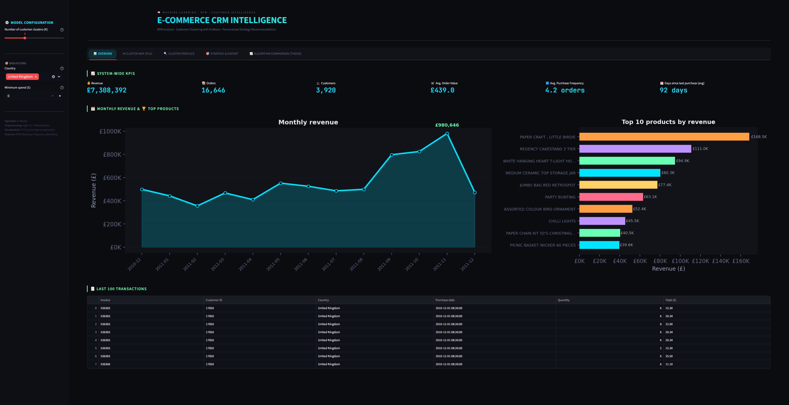
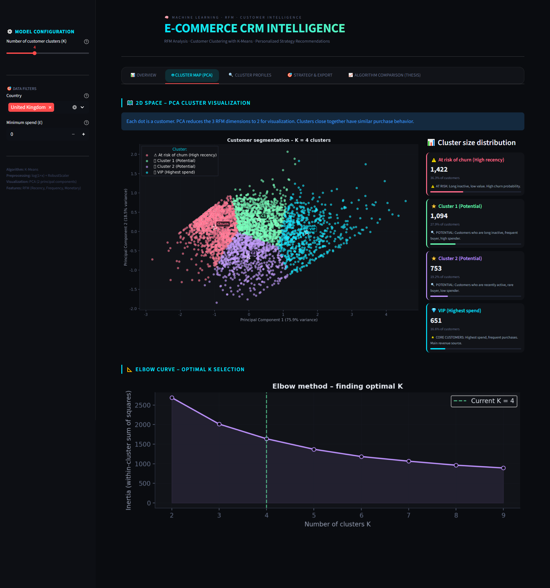
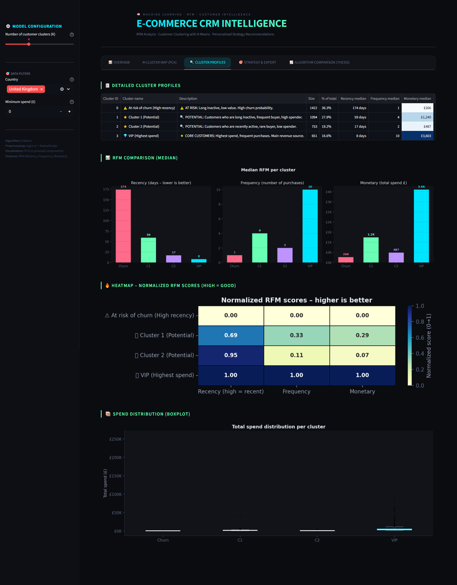
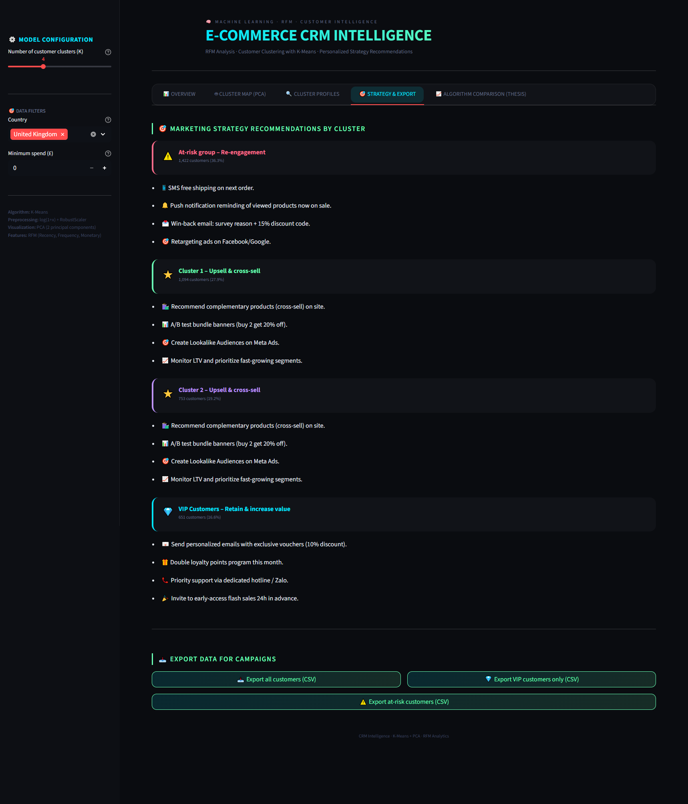
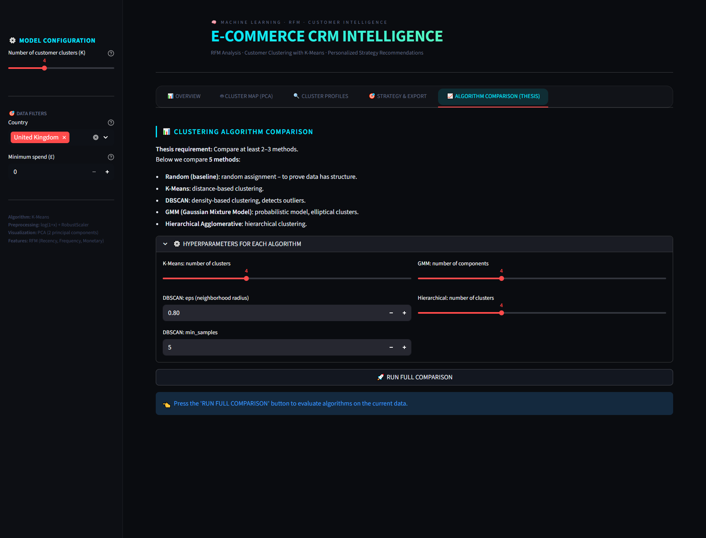

E‑COMMERCE CRM INTELLIGENCE
Customer Segmentation · RFM Analysis · K‑Means Clustering · Interactive Dashboard
🎯 What problem does it solve?
Many e‑commerce businesses struggle to understand customer behavior beyond basic metrics. They rely on manual, intuition‑based segmentation, leading to inefficient marketing spend and missed opportunities. This project automates customer clustering using RFM (Recency, Frequency, Monetary) analysis and K‑Means, enabling data‑driven strategies: identify VIPs, detect churn risk, and personalize campaigns — all through an interactive web dashboard.
⚙️ Methodology & Implementation
- Data preprocessing – Cleaned and transformed the "Online Retail II" dataset (500k+ transactions). Extracted RFM features and applied log1p + RobustScaler to handle skewness and outliers.
- Clustering – Trained K‑Means (unsupervised learning) to group customers. Used PCA for 2D visualization and compared performance with DBSCAN, GMM, and Hierarchical clustering.
- Evaluation – Validated using Silhouette Score, Davies‑Bouldin Index, and Calinski‑Harabasz Index. Conducted ablation study to prove the benefit of log transformation.
- Dashboard – Built a full‑stack interactive web app with Streamlit, featuring real‑time filtering, cluster mapping, strategy recommendations, and CSV export for marketing teams.
- AI assistance – Used Gemini AI as a coding assistant for debugging, algorithm explanation, and optimization.
🛠️ Technologies
📊 Project stats
- 500k+ transactions processed
- 5 clustering algorithms compared
- Silhouette score improved 22% with log1p
- Real‑time dashboard (Streamlit)
- AI‑assisted development (Gemini)
🎓 Academic context
Final project for Artificial Intelligence course. Focus on unsupervised learning, feature engineering, and building a production‑ready analytics tool.
📸 Dashboard preview





🔗 Source code
The full project is available on GitHub. It includes the Streamlit app, preprocessing scripts, clustering models, and the ablation study.
🐙 VIEW ON GITHUB →